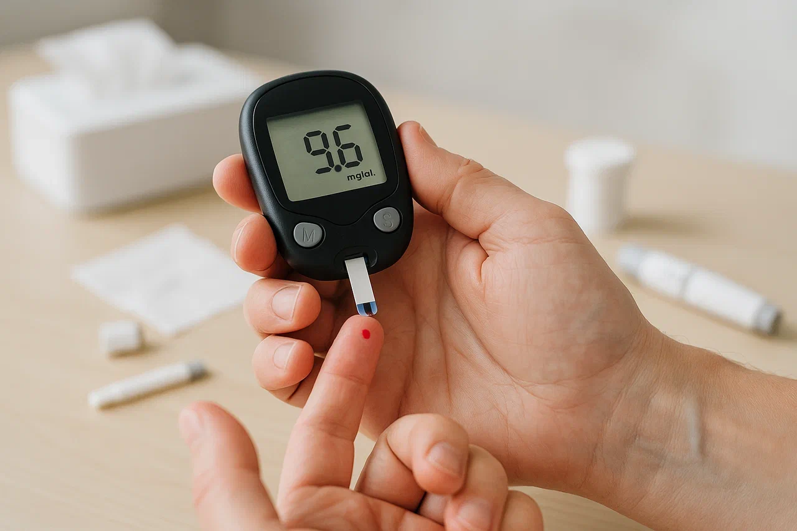
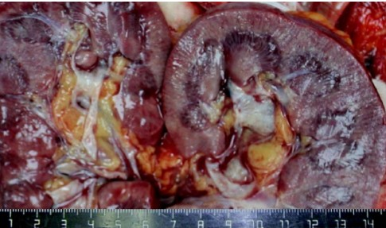
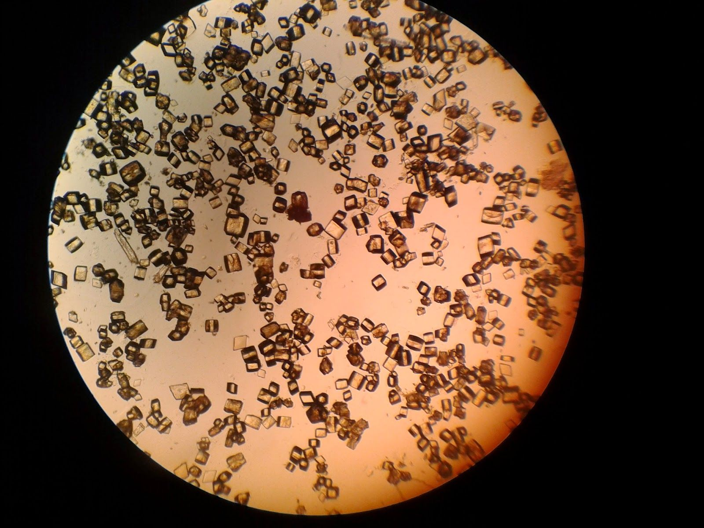
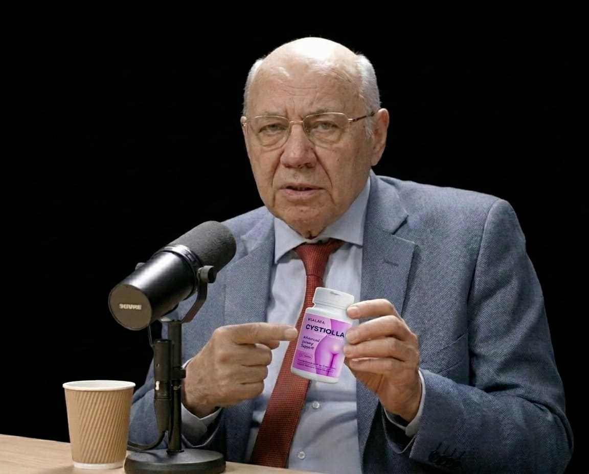
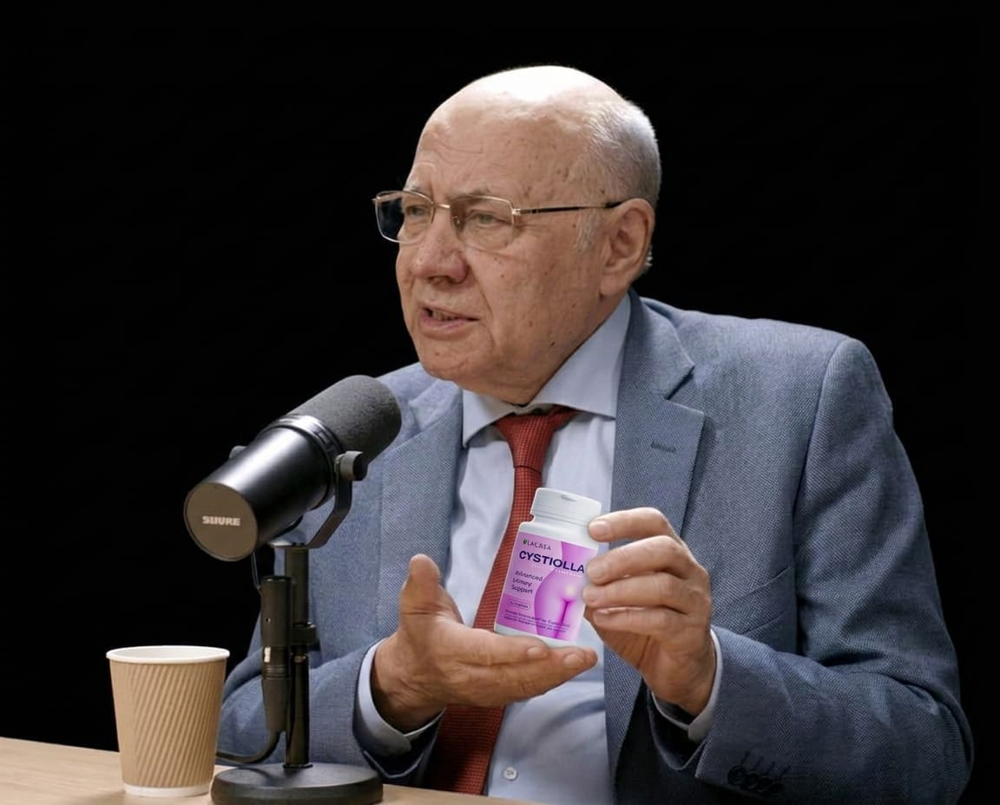
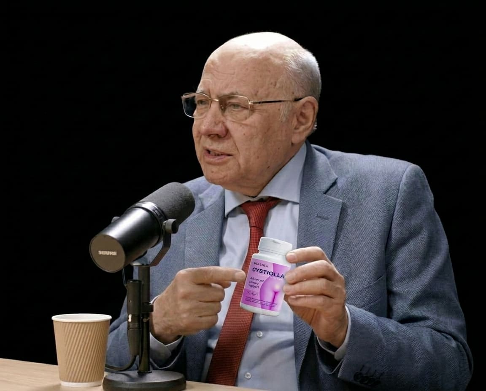

Scrisoarea Elenei Matei, 62 de ani, Brașov. Publicată la cererea ei.
Redacția a primit această scrisoare pe 12 martie. Elena a încetat din viață pe 18 martie. A cerut să o publicăm, pentru ca alte femei să nu repete drumul ei. Îndeplinim ultima ei dorință.
„Mă numesc Elena. Am 62 de ani. Când citiți asta, cel mai probabil nu mai sunt.
Medicii mi-au dat trei luni. Insuficiență renală. Stadiu terminal. Dializa nu ajută — organismul este prea epuizat. Stau în apartamentul meu din Brașov și scriu această scrisoare de mână, pentru că nu vreau să duc adevărul cu mine în mormânt.
Nu m-a ucis cistita. M-a ucis ignoranța. A mea și a medicilor.”
Aveam 52 de ani. Menopauză. Flăcări noaptea — mă trezeam udă, ca după duș. Treptat am luat în greutate — în doi ani am pus 8 kg, deși mâncam ca de obicei. A apărut slăbiciune după masă — atât de mare, că adormeam la volan. Uscăciune în gură dimineața — mă trezeam cu senzația că am deșert în gură. Și încă — îmi dorea mereu dulce. Nu puteam trece pe lângă cofetărie. Ciocolată, biscuiți, chiflă — asta devenise mângâierea mea.
Atunci a început și cistita. Mai întâi o dată la șase luni. Apoi mai des. Imagine tipică: dimineața mă trezesc, merg la toaletă, și brusc — arsură. Înțepătură. Senzația că prin uretră trece sârmă încinsă. Urina tulbure, cu miros puternic — nu ca de obicei, ci dulceag, grețos. Mi-am amintit asta pentru totdeauna. Uneori — roz de la sânge.
Urologul de la policlinică mi-a prescris Monural. Un plic seara. A ajutat o lună. Am răsuflat ușurată. Dar după o lună — din nou. Aceeași arsură, aceleași înțepături, același miros dulceag al urinei. Alt urolog a prescris Ciprol. A ajutat două săptămâni. Al treilea — Fosfomicină. A ajutat cinci zile. Al patrulea și-a ridicat mâinile și a spus: «Ei bine, ce vreți, vârsta, menopauza. Beți suc de merișoare și învățați să trăiți cu asta».
Am mers în cerc timp de 10 ani. Antibiotice, picături din plante, suc de merișoare cu litrii, tampoane urologice. Cheltuiam pe toate acestea peste 3.000 de lei pe an. În 10 ani — 30.000 de lei. Am dat acești bani ca să mor încet.
Acum, privind înapoi, văd cum totul se lega. Dar atunci nu conectam una cu alta.
Și cistita. Constantă. Care se întorcea.
Niciun medic nu a legat totul într-o singură imagine. Niciunul nu a spus: «Hai să verificăm insulina». Niciunul nu a explicat că mirosul urinei și pofta de dulce sunt verigi ale aceleiași lanț.
La 61 de ani am ajuns la endocrinolog. Din întâmplare. Făceam control medical pentru sanatoriu. Medicul s-a uitat la analizele mele și a întrebat: «Știți că aveți prediabet?»

Prediabet. Rezistență ascunsă la insulină. Insulina mea era de 4 ori mai mare decât normal. Organismul o producea cu tone, ca să țină zahărul în sânge. Dar zahărul tot se scurgea în urină. Urina mea era dulce. Literalmente. Bacteriile din vezica urinară primeau mediu nutritiv ideal. Cald, umed, zahăr — bufet suedez non-stop. Beam antibiotic — ucidea bacteriile. Dar zahărul rămânea. Și după o săptămână creștea o colonie nouă.
E ca și cum ai încerca să scoți apa dintr-o barcă cu gaură. Scoți, iar apa tot vine.
Am întrebat: «De ce nimeni nu mi-a spus asta mai devreme? De ce niciun urolog nu a verificat insulina?»
Endocrinologul a răspuns: «Pentru că urologia și endocrinologia sunt specialități diferite. Urologul caută bacterii în urină. Endocrinologul caută probleme hormonale. Iar ce e între ele — teritoriu nimănui. Ați ajuns în zona moartă a medicinei».
În zona moartă. Din care nu am mai ieșit.
Până atunci era prea târziu. Cistita a trecut în pielonefrită. Pielonefrită — în insuficiență renală cronică. Iar rezistența la insulină în acești 10 ani s-a transformat în diabet de tip 2 adevărat.
Zahărul și infecția mi-au ucis rinichii.

Acum știu. Dar prea târziu.
Când aveți rezistență la insulină, pancreasul produce prea multă insulină ca să împingă glucoza în celule. Celulele rezistă. Insulina tot crește. Și la un moment dat rinichii încep să lase glucoza în urină.
Urina devine dulce. Analiza obișnuită nu arată asta — glucoza în probe unice e adesea normală. Dar dacă colectezi urina de 24 de ore — acolo e zahăr.
Bacteriile care trăiesc în tractul urinar primesc hrană nesfârșită. Se înmulțesc, formează biofilm — strat mucos care le protejează de antibiotice. Bei antibiotic — stratul superior de bacterii moare, devine mai ușor. Dar biofilmul rămâne. Și după o săptămână eliberează o armată nouă.
Iar zahărul între timp distruge vasele de sânge. Pereții vezicii urinare nu primesc suficient oxigen. Mucoasa se subțiază. Apar microfisuri. Bacteriile pătrund adânc în țesuturi. Începe inflamația cronică.
An după an. Antibiotic după antibiotic. Până când rinichii spun «destul».
Cu o lună înainte să mi se pună diagnosticul terminal, am ajuns la consultația doctorului Irnel Popescu. Singurul din România care combină endocrinologia și urologia. S-a uitat la analizele mele vechi, a făcut test extins de insulină și a spus:
«Elena, cistita dumneavoastră nu a fost niciodată o infecție. A fost un simptom al rezistenței la insulină. Dacă acum 10 ani vi s-ar fi prescris berberină și acid alfa-lipoic, acum ați fi sănătoasă».
Am întrebat: «De ce nimeni nu mi-a spus asta mai devreme?»
A răspuns: «Pentru că nu e profitabil. Să calculăm împreună, Elena. Cheltuiați pe antibiotice, supozitoare, tampoane și analize 3.000 de lei pe an. În 10 ani — 30.000 de lei. Și nu erați singură. În România peste 2 milioane de femei după 45 de ani suferă de cistită cronică recurentă. Dacă fiecare cheltuie cel puțin 2.500 de lei pe an — iar multe cheltuie mai mult — asta înseamnă 5 miliarde de lei pe an. Cinci miliarde doar în țara noastră. Doar pe cistită. Doar pe ceea ce nu funcționează.
Și acum imaginați-vă că fiecăreia i se spune adevărul: «Problema dumneavoastră nu e în vezica urinară. Problema e în insulină. Luați berberină și acid alfa-lipoic. Costă 111 lei pe curs, o dată pe an.» Asta înseamnă 222 de milioane de lei în loc de 5 miliarde. Pierdere de 4,8 miliarde de lei pe an pentru industria farmaceutică. Doar în România.
De aceea cercetările despre rezistența la insulină și cistită nu sunt finanțate. De aceea la conferințele medicale urologilor nu li se spune despre indicele HOMA-IR. De aceea în farmacii vi se oferă Monural la 45 de lei, nu berberină la câțiva bănuți. Cistita dumneavoastră hrănea o întreagă industrie. O industrie care câștigă pe durerea dumneavoastră. Pe ignoranța dumneavoastră. Pe moartea dumneavoastră, Elena. Și pe moartea miilor ca dumneavoastră».
Doctorul Popescu a spus că, după ce a văzut zeci de cazuri ca al meu, nu mai putea dormi liniștit. S-a închis în laborator și a început să lucreze.
«Am răsfoit 1.200 de articole științifice. Căutam nu chimie, nu sintetică, nu încă un antibiotic. Căutam componente naturale care pot face ceea ce nu face niciun urolog: să scoată zahărul din urină și să restabilească sensibilitatea celulelor la insulină. Am petrecut 14 luni în laborator. Am testat formule pe mine. Am schimbat proporțiile. Am testat din nou. Și când am găsit raportul perfect, am înțeles: asta e.
Trei componente. Trei chei pentru o singură problemă. Dar doar în dozaj exact — cu un miligram în plus sau în minus, efectul e ca la placebo.
Primul: berberină. Extract de berberis. 500 mg într-o capsulă. În formă pură, fără impurități. Funcționează ca metformin natural — cu o diferență: metforminul distruge ficatul la administrare prelungită, iar berberina — nu. Reduce rezistența la insulină și scoate zahărul din urină. Bacteriile își pierd baza alimentară în 72 de ore. Pur și simplu nu se mai înmulțesc. Nu au ce mânca.
Al doilea: acid alfa-lipoic. 300 mg. Cel mai puternic antioxidant, care acționează la nivel celular. «Repară» receptorii celulari deteriorați de insulină ridicată. Imaginați-vă o încuietoare acoperită cu clei. Cheia nu intră. La fel și glucoza nu poate intra în celulă când receptorii sunt deteriorați. Acidul alfa-lipoic dizolvă acest «clei». Celulele se deschid din nou pentru glucoză. Zahărul pleacă din sânge în celule — și nu ajunge în urină.

Al treilea: extract de scorțișoară de Ceylon. 200 mg. Nu cassia maroie de la supermarket — în ea e de 250 de ori mai multă cumarină, și distruge ficatul. Scorțișoara de Ceylon — sigură, cu conținut de cumarină sub 0,004%. Imită acțiunea insulinei și ajută glucoza să intre în celule fără creșteri bruște de hormon. Ușor, lin, fără încărcare pe pancreas.
Am amestecat aceste trei componente într-o singură formulă. Am testat pe 500 de femei. La 82% cistita a dispărut complet în 30 de zile. Fără antibiotice. Fără recidive. Am numit-o Cystiolla. Pentru că nu e doar un remediu pentru cistită. E un remediu pentru cauza ei».
«Pentru dumneavoastră, Elena, e deja prea târziu, — a spus el. — Dar pentru mii de alte femei — încă nu».
Nu am apucat să încerc Cystiolla. Rinichii mei erau deja morți. Dar am rugat doctorul Popescu să-mi dea contactele femeilor care au apucat. Voiam să aud că măcar cineva s-a salvat.
Iată ce mi-au spus.
Mariana, 53 de ani, Cluj: «Elena, plâng citind scrisoarea dumneavoastră. Am avut aceeași poveste — cistită ani de zile, nimeni nu putea ajuta. Nici eu nu puteam trăi fără dulce. Mă trezeam de 5 ori pe noapte. Urina avea miros dulceag puternic. Doctorul Popescu a găsit rezistența la insulină și mi-a dat Cystiolla. Au trecut două luni — niciun atac. Zahărul din sânge s-a normalizat. Nu mă mai trezesc noaptea. Dorm 7 ore la rând. Trăiesc. Trăiesc pentru că am aflat adevărul mai devreme decât dumneavoastră».
Doina, 61 de ani, Iași: «Elena, și eu aveam uscăciune în gură dimineața și poftă de dulce. Și cistită cu sânge. Analizele arătau bacterii, antibioticele nu ajutau. Cystiolla a schimbat totul. În două săptămâni urina a devenit limpede, fără miros. Într-o lună analizele erau sterile. Și știți ce e cel mai uimitor? Nu mi-a mai fost dor de dulce. Pur și simplu nu mai voiam. Organismul nu mai cerea zahăr. Sunt sănătoasă. Iar dumneavoastră nu mai sunteți. Cât de nedrept».
Loredana, 49 de ani, Timișoara: «Lucrez la birou, gustări constante cu biscuiți. Cistita era în fiecare lună. Pielea mânca, mai ales noaptea. Rănile se vindecau două săptămâni. Atribuiam totul stresului. Doctorul Popescu a spus: aveți rezistență la insulină, și ea provoacă cistita. Cystiolla și renunțarea la dulce au schimbat totul. Cistita a dispărut. Pielea nu mai mânca. Am slăbit 5 kg. Citesc scrisoarea dumneavoastră și înțeleg: puteam fi eu».

Nu sunt medic. Dar am parcurs acest drum până la capăt. Și vreau să vă opriți și să vă gândiți.
Dacă aveți peste 45 de ani și aveți cel puțin trei dintre aceste semne — cel mai probabil aveți rezistență ascunsă la insulină, și anume ea provoacă cistita:
Dacă v-ați recunoscut — opriți-vă. Mergeți pe drumul meu.
Doctorul Popescu a spus că prețul obișnuit al unui curs Cystiolla este 450 de lei. La început am gândit: «Scump». Apoi mi-a pus cifrele pe masă. Și am tăcut.

«Uitați-vă, Elena. 450 de lei — asta e prețul unui singur curs. Unu singur. Și acum amintiți-vă cât cheltuiați în fiecare an. Monural — 45 de lei pe plic, de 6 ori pe an — 270 de lei. Ciprol — 35 de lei pe cutie, de 4 ori pe an — 140 de lei. Supozitoare pentru candidoză după fiecare antibiotic — 60 de lei pe cutie, de 6 ori pe an — 360 de lei. Tampoane urologice — 25 de lei pe pachet, 4 pachete pe lună, 12 luni — 1.200 de lei. Canephron, Phytolysin, frunze de merișor — 40 de lei pe cutie, în fiecare lună — 480 de lei. Vizite la urolog, analize de urină, ecografie — minim 500 de lei pe an. Total — aproape 3.000 de lei pe an. Și așa 10 ani la rând. 30.000 de lei pentru 10 ani de durere. Și nici o zi fără gândul la toaletă.
Iar Cystiolla — 450 de lei. Un curs. O dată pe an. Fără antibiotice. Fără tampoane. Fără analize la fiecare două luni. 450 de lei față de 3.000. Asta înseamnă o economie de 2.550 de lei pe an. În 10 ani — 25.500 de lei care rămân în buzunarul dumneavoastră, nu în casa de marcat a farmaciei».
Mă uitam la aceste cifre și nu puteam crede. Am dat 30.000 de lei ca să mor. Iar puteam da 450 — și să trăiesc.
Dar doctorul Popescu nu s-a oprit aici. A spus: «Elena, am creat Cystiolla nu ca să câștig bani. L-am creat după ce propria mea soră a trecut prin același iad ca dumneavoastră. Am văzut durerea ei. Am văzut umilința ei. Am văzut cum își cheltuia pensia pe medicamente care nu funcționau. Și am jurat: preparatul meu va fi accesibil fiecărei femei, nu doar celor cu bani.
De aceea pentru femeile care vor citi scrisoarea dumneavoastră am făcut prețul de 111 lei. E sub costul de producție. De 4 ori mai ieftin decât prețul obișnuit și de 27 de ori mai ieftin decât ceea ce cheltuiți acum pe medicamente inutile. Pierd bani la fiecare cutie. Dar nu vreau încă o Elena care să scrie o astfel de scrisoare. Nu vreau încă o femeie să moară doar pentru că nu și-a permis adevărul».
111 lei.
Două cine la restaurant. Trei pachete de cafea bună. O vizită la frizerie. Sau — o viață fără cistită. O viață fără durere. O viață fără frică.
Nu știu cât mi-a mai rămas. Medicii spun — trei luni. Scriu această scrisoare și plâng. Nu pentru mine. Pentru voi. Pentru cei care acum beau Monural și gândesc:
«Nimic grav, e doar cistită». Pentru cei care mănâncă ciocolată seara și nu știu că hrănesc bacteriile din vezica urinară. Pentru cei care se trezesc noaptea la toaletă și atribuie asta vârstei. Pentru cei care acum se uită la prețul de 111 lei și gândesc: «Probabil e o înșelătorie, nu poate fi atât de ieftin».
Poate. Pentru că doctorul Popescu nu e o companie farmaceutică. E medic. A văzut moartea. Și nu vrea să câștige pe ea.
Nu e vârsta. Nu e doar cistită. E rezistența la insulină. Și vă va ucide, dacă nu vă opriți.
Opriți-vă. Înainte să fie prea târziu. 111 lei. Asta e prețul vieții mele. Nu repetați greșeala mea.
Elena Matei, Brașov.
12 martie 2026.
P.S. de la redacție. Elena a încetat din viață pe 18 martie. Publicăm această scrisoare conform ultimei ei dorințe. Doctorul Irnel Popescu a confirmat: pentru cititoarele acestei scrisori prețul la Cystiolla este de 111 lei. Cantitatea de cutii la acest preț este limitată.

Apăsați butonul de mai jos pentru a lăsa o cerere. Un consultant vă va suna în 10 minute. Fără plată în avans. Plata doar la primire.
Lăsați numărul de telefon chiar acum. Până nu șterg scrisoarea Elenei — companiile farmaceutice deja cer să o scoată.